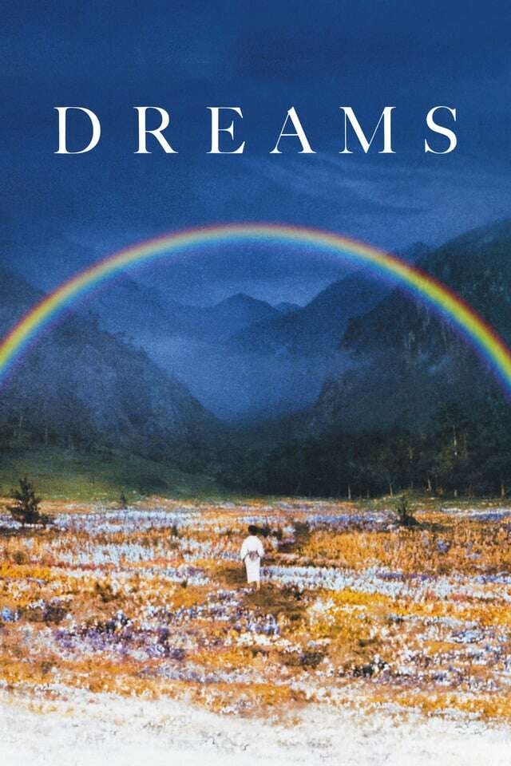

10 filmes criativos que você precisa assistir!
Nesta tabela reunímos 10 filmes que, de uma forma ou de outra, expressam alguma criatividade
excepcional, destacando-se pela inventividade.
| Pôster | Filme | Sinopse | Nota |
|---|---|---|---|

|
Depois de Horas |
Um operador de computadores comum tem a pior noite de sua vida depois de concordar em visitar uma garota no Soho que conheceu naquela noite em uma cafeteria. |
4.1⭐ |
|
Close-up |
Este híbrido de ficção-documentário utiliza um evento sensacional da vida real – a prisão de um jovem sob a acusação de ter personificado fraudulentamente o conhecido cineasta Mohsen Makhmalbaf – como base para uma investigação impressionante e multifacetada sobre filmes, identidade, criaçãoartística, e existência, na qual as pessoas reais do caso atuam. |
4.4⭐ |
|
|
Dogville |
Um árido é elegantemente utilizado para criar um cenário minimalista de cidade pequena, no qual uma mulher misteriosa chamada Grace se esconde dos criminosos que a perseguem. A cidade tem duas caras e se oferece para abrigar Grace, desde que ela possa fazer com que valha a pena seu esforço, então Grace trabalha duro sob o emprego de vários moradores da cidade para ganhar seu favor. As tensões aumentam, no entanto, e o status de Grace como uma forasteira indefesa provoca desprezo e abuso por parte dos cidadãos de Dogville. |
4.1⭐ |
|

|
Tudo em Todo Lugar ao Mesmo Tempo |
Uma imigrante chinesa de meia-idade é arrastada para uma aventura insana, onde só ela pode salvar o que é importante para ela, conectando-se com as vidas que poderia ter levado em outros universos. |
4.3⭐ |
|
Janela Indiscreta |
O fotógrafo profissional L.B. ‘Jeff’ Jeffries quebra a perna ao fazer uma cena de ação em uma corrida de automóveis. Confinado em seu apartamento em Nova York, ele passa o tempo olhando pela janela traseira observando os vizinhos. Quando ele começa a suspeitar que um homem do outro lado do pátio pode ter assassinado sua esposa, Jeff pede a ajuda de sua namorada consultora de moda da alta sociedade e de sua enfermeira domiciliar para investigar. |
4.4⭐ |
|
|
Love Exposure |
A história de um adolescente chamado Yu, que se apaixona por Yoko, uma garota que ele conhece enquanto trabalhava como fotógrafo de “saias levantadas” em uma ramificação da indústria pornográfica. Suas tentativas de cortejá-la são complicadas por um pouco de travestismo - que convence Yoko de que ela é lésbica -, flertes com kung-fu e crime, e uma luta constante com a culpa que é um legado de sua educação católica. |
4.4⭐ |
|

|
Pobres Criaturas |
Trazida de volta à vida por um cientista pouco ortodoxo, uma jovem foge com um advogado em uma aventura turbulenta pelos continentes. Livre dos preconceitos da sua época, ela cresce firme no seu propósito de defender a igualdade e a libertação. |
4.1⭐ |
|  |
Sonhos |
Uma coleção de contos mágicos baseados nos sonhos reais do diretor Akira Kurosawa. |
4.2⭐ |
|
Persona |
Uma jovem enfermeira, Alma, é encarregada de Elisabeth Vogler: uma atriz que parece saudável em todos os aspectos, mas que não fala. Enquanto passam algum tempo juntos, Alma fala constantemente com Elisabeth, sem nunca receber resposta. Alma finalmente confessa seus segredos para uma aparentemente simpática Elisabeth e descobre que sua própria personalidade está sendo submersa na personalidade de Elisabeth. |
4.4⭐ |
|
|
Tampopo - Os Brutos Também Comem Spaghetti |
Dois motoristas de caminhão chegam a uma parada de fast food decrépita à beira da estrada que vende macarrão ramen. A proprietária viúva, Tampopo, implora que a ajudem a transformar seu estabelecimento em um modelo da “arte de fazer sopa de macarrão”. |
4.4⭐ |